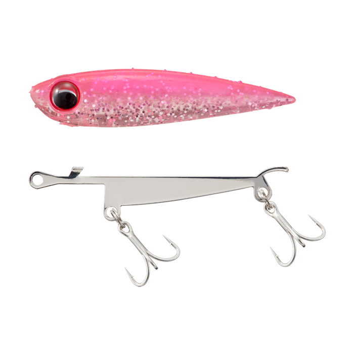
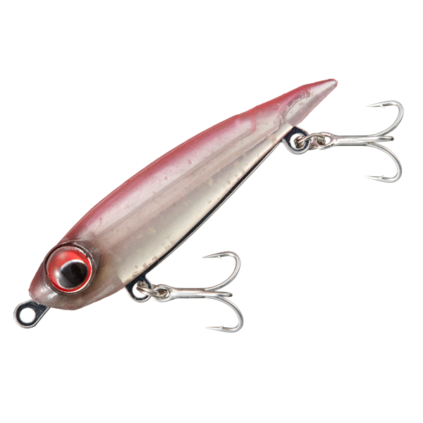
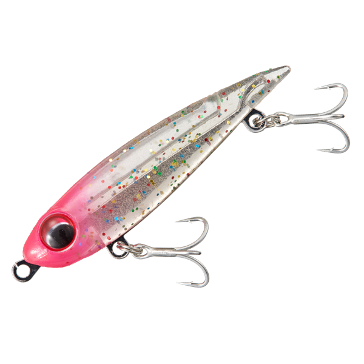
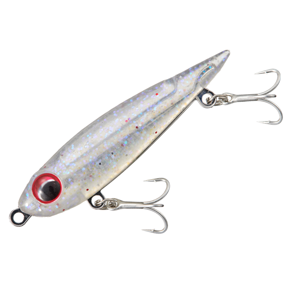
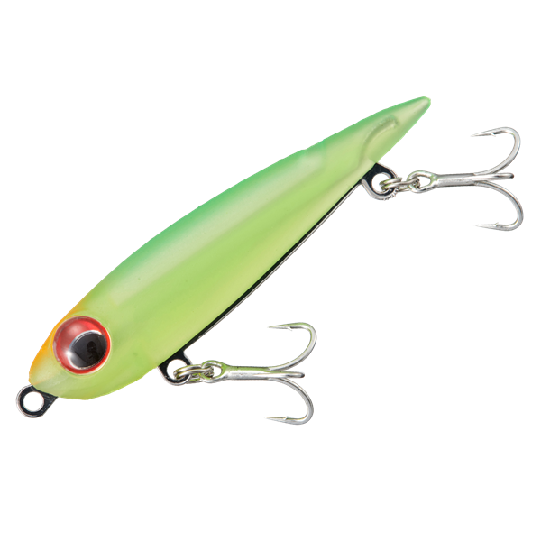
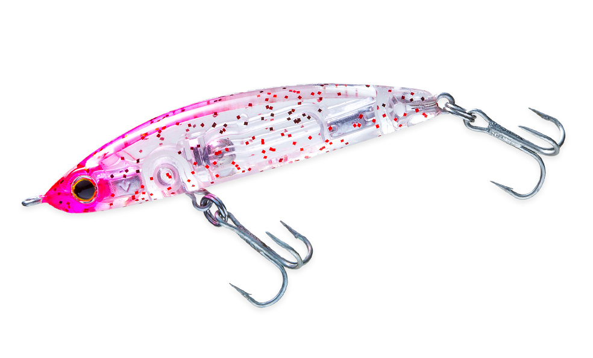
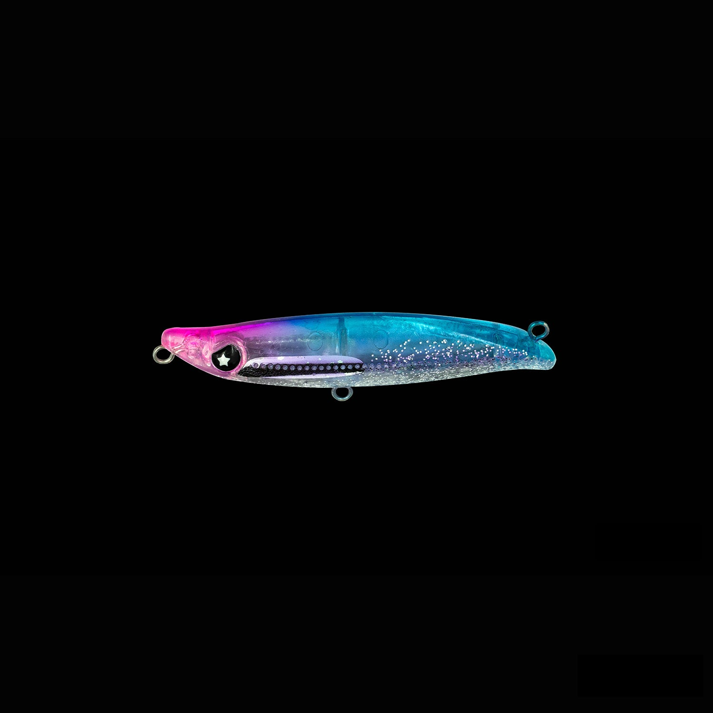
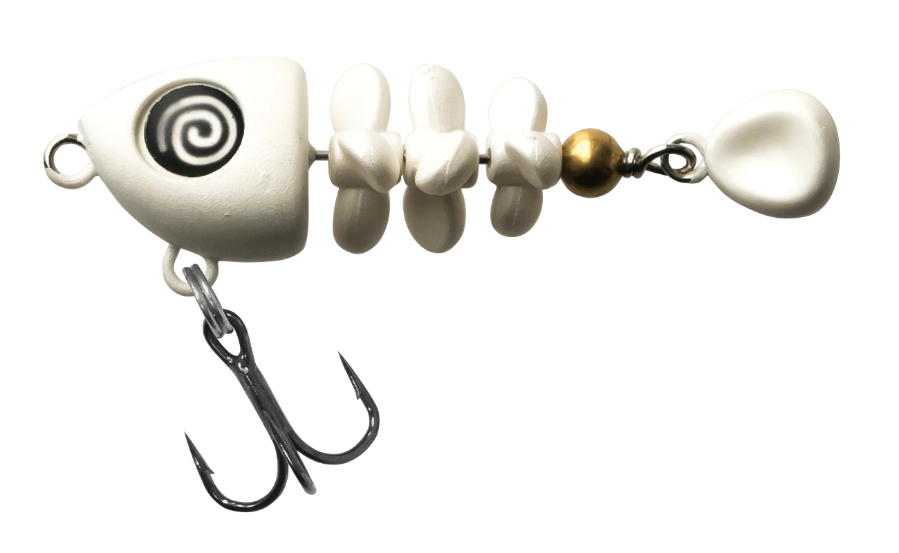

ロックライバー スティルペンシル50
ロックライバー スティルペンシル50は、メジャークラフトのライトゲーム用ペンシルです。キャッチコピーは「巻くだけで簡単 なんでも釣れる」。
ボディがワーム素材なので、フックがボディに当たっても音がせず、魚に警戒されにくい「無音（スティル）」のルアーなのが最大の特徴です。

画像出典:メジャークラフト公式HP
スペック
- メーカー
- Major Craft（メジャークラフト）
- シリーズ
- ロックライバー
- タイプ
- ペンシル（ワームボディ・ワーム交換可）
- 全長
- 5cm
- 重さ
- 3g
- 付属品
- スペアワーム1個・0.2gネイルシンカー2個
- カラー
- 全9色
- ターゲット
- メバル・アジ・根魚など
- 価格
- 825円（税込）
- 発売
- 2025年9月
▼今すぐチェック

ロックライバー スティルペンシル50の特徴
ソフトボディとフラッシュボーンの新たな領域
-
無音（スティル）のワームボディ
ボディがワーム素材なので、フックが当たっても音がしない。音で魚に警戒されにくい。
-
ほぼ動かないゆっくりウォブリング
ゆっくりウォブリングするが、ほぼ動かない。その控えめな動きが、スレた魚に効く。
-
ワーム交換ができる
ワームのボディは交換でき、スペアワーム1個と0.2gのネイルシンカー2個が付属。カラーや重さを調整できる。
ロックライバー スティルペンシル50の使い方
基本は、投げて、ゆっくりただ巻きするだけです。動きが控えめなので、余計なアクションは入れず、一定のスピードで巻くのがコツです。
付属のネイルシンカーを入れると少し重くなり、沈めて深めのレンジも探れます。

画像出典:メジャークラフト公式HP
ロックライバー スティルペンシル50の得意な状況
プレッシャーが高く、ハードルアーの音や強い動きを嫌うメバルやアジ、根魚を狙う時に出番です。
音がせず、ほとんど動かない自然さで、巻くだけで釣れるのが強み。初心者でも気軽に使えて、渋い日にもよく釣れるペンシルです。
ワンポイント
表層で反応がない時は、付属の0.2gネイルシンカーを1本入れて、少し沈めてから同じスピードで巻くと、魚のいるレンジに合わせられます。
人気カラー
ロックライバー スティルペンシル50の人気カラーを紹介します。

クリアラメ澄み潮の日中に、ナチュラルに見せたい時に。

クリアピンク ヘッド（夜光）頭が夜光。夜の常夜灯まわりに。

イカ（点発光）点で光るイカカラー。夜に。

マットチャート濁りがある時や、目立たせたい時に。
※全9色。
画像出典:メジャークラフト公式HP
▼今すぐチェック
ロックライバー スティルペンシル50に似ているルアー
-

ハードコア LG シンキングペンシル50 DUEL 詳細はこちら＞重心移動で飛ぶ、4gのライトゲーム用シンペン。
-

シュリペン55 レガーレ 詳細はこちら＞ライトゲーム用のペンシル。
-

魚骨 ブリーデン 詳細はこちら＞ライトゲームで使えるプラグ。